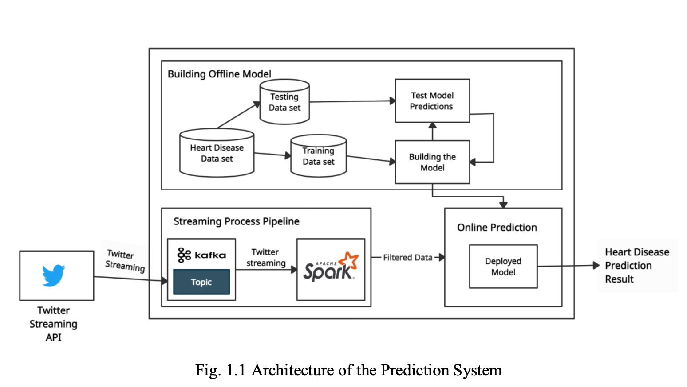
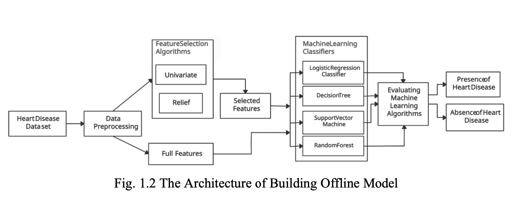
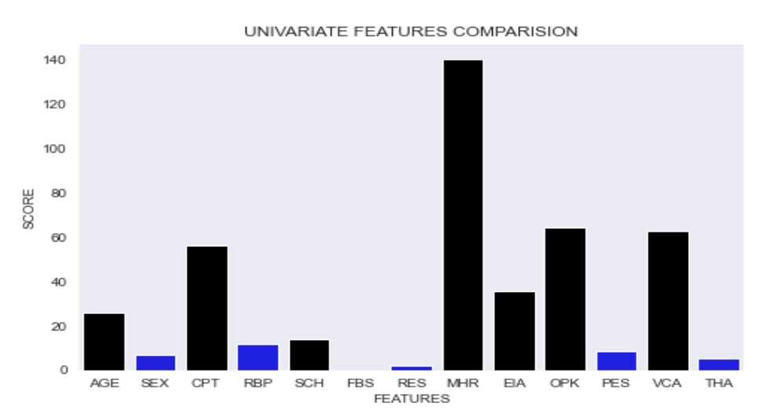
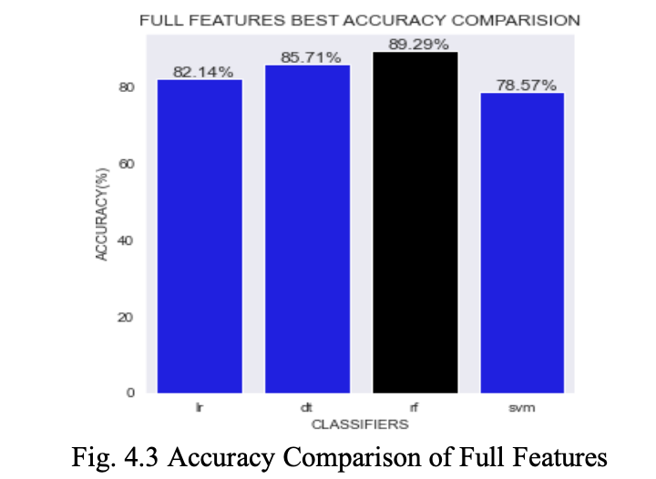
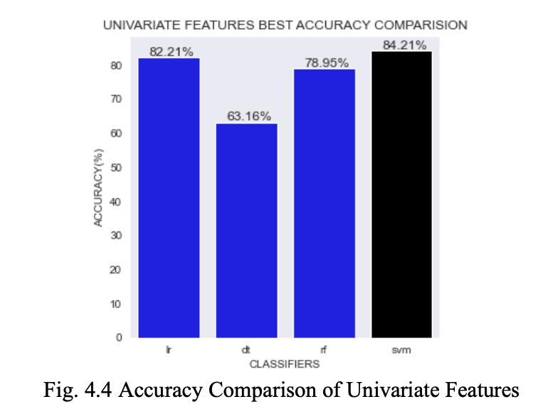
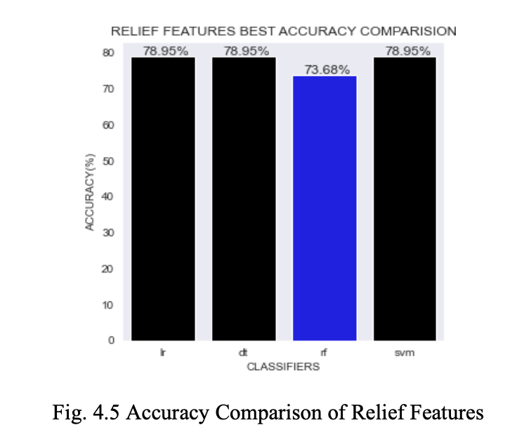
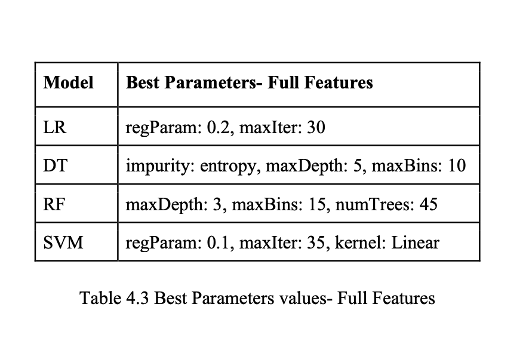
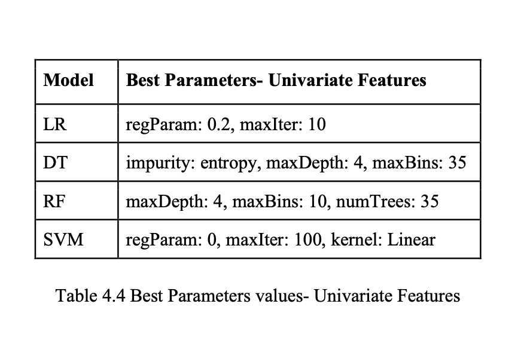
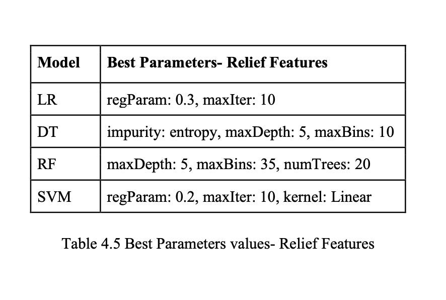
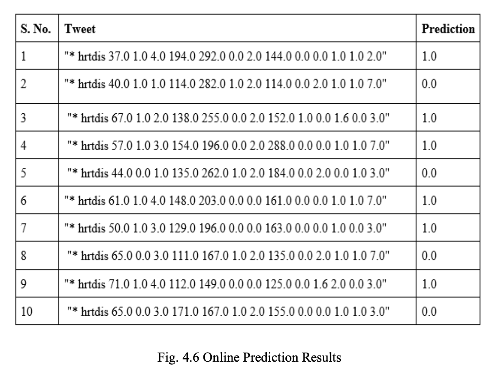

Heart Disease Identification from Patients’ Social Posts, Machine Learning Solution on Spark
 Dataset Link
Code Link
Dataset Link
Code Link
1. Introduction:
Heart disease is ruling the charts of the most eminent causes of death all over the world. Heart diseases allude to various contexts that affect proper functioning of heart. In the USA, around 17.9 million people deceased due to heart disease in 2016. Heart diseases like stroke, hypertension are very dangerous and lead to death. So, a system with high accuracy is needed for early prediction of heart disease by understanding the patterns that causes heart diseases. This helps in early detection of the attack and the patient can be treated accordingly. Many systems based on various machine learning and deep learning classification algorithm with fairly good accuracy have been proposed. Due to rapid growth of population, the medical records are also increasing exponential. It is tough to handle those huge amount of medical data. Many researches are going on regarding this problem. One of the most challenging tasks is to prognosticate heart disease in real-time. The most significant aspect of this paper is real-time prediction of tweets. The possibility of heart disease in streaming data is prognosticated in real-time by integrating Apache Spark and Apache Kafka. The motive of the work is deploying a model with best possible accuracy on Cleveland heart disease dataset 2016 from UCI repository and then by using this best model the streaming medical data from twitter is predicted. This System incorporates three components: 1. Building Offline Model, 2. Streaming Process Pipeline, and 3. Online prediction. Aforementioned is built on Apache Spark and Apache Kafka which helps in prediction of huge amount of data. The offline model is built by using four machine learning algorithms LR, DT, RF, and SVM on full features and selected features by using Univariate and Relief feature selection algorithms. Accuracy is improved by applying hyperparameter tuning and k-fold cross-validation techniques. RF has achieved the highest accuracy of 89.9%.
2. Methodology:
The architecture comprises three components specifically 1. Building Offline Model, 2. Streaming Process Pipeline, and 3. Online Prediction, depicted in Fig. 1.1 below
2.1 Building Offline Model:
The architecture comprises three components specifically 1. Building Offline Model, 2. Streaming Process Pipeline, and 3. Online Prediction, depicted in Fig. 1.1 below
2.2 Streaming Process pipeline:
Apache Spark is affiliated with Apache Kafka for evaluating the model in real-time.
2.3 Online Prediction:
The selected model with highest accuracy (RF) will receive the data in the form of a vector from Apache Spark and will prognosticate the heart disease.
3. Dataset:
This section broadly describes the outline of the dataset that was used in Building Offline Model and also about the details of the dataset that was used for real-time evaluation of the system.
3.1 The Cleveland Heart Disease Data set:
The outline of the dataset used to build the offline model component is discussed underneath. The data set i.e., processed Cleveland data is an open-source data set [2], which is available in UCI machine learning repository. The data set consists of 303 rows and 14 columns. The data set mentioned above contains 13 independent features and a dependent class label variable. The class label column in the data set depicts the status of the heart disease. The description of features of the dataset is presented in Fig. 1.3 below. The class label variable holds five values, where a value 0 represents the deprivation of heart disease whereas the residual values represent a possible existence of heart disease. The work carried out on the dataset is binary class classification. So, the values in the class label are scaled to hold either 0 or 1, where he value 0 holds its original description and value 1 is a generalization of the residual values which indicates the existence of heart disease.
3.2 Real-time twitter data:
Twitter is a most popular social network platform and is widely used to share, post content and to discuss various topics. Hence, twitter is recognized a best pedigree for real-time health data. Users tweet the heart related tweets which constitute to the stream of tweets that are to be retrieved from twitter. The filtered data from the tweets is used for the real- time evaluation of the proposed prediction system. For the proposed system, to retrieve tweet streams from twitter, it should establish an authorized connection with Twitter. This connection is made using the Twitter streaming API. Twitter uses a protocol called OAuth for an authenticated connection and security purposes, to access the services from twitter and use the data. To make this authenticated connection we should apply for a developer account on twitter. On a successful approval for a developer account, the user will be issued unique keys, which can be used to establish an authenticated connection and access the tweet streams. After the connection is established, tweets with the header “hrtdis” are retrieved. The tweet consists of a sequence of values which appear in the same sequence as in the training data.
4. Results:
4.1 Univariate Feature Selection:
The results of Univariate Feature Selection algorithm are depicted in Fig. 4.1 below, where the top seven features are marked black.
4.2 Relief Feature Selection:
The results of Relief Feature Selection algorithm are depicted in Fig. 4.2 below, where the top seven features are marked black.

4.3 Accuracy:
Fig. 4.3 depicts the comparison of accuracy between LR, DT, RF, and SVM Classifiers on Full Features. RF has achieved the highest accuracy of 89.9%.
Fig. 4.4 depicts the comparison of accuracy between LR, DT, RF, and SVM Classifiers on Univariate Features. SVM has achieved the highest accuracy of 84.21%.
Fig. 4.5 depicts the comparison of accuracy between LR, DT, RF, and SVM Classifiers on Relief Features. LR, DT, and SVM have achieved the highest accuracy of 78.95%.
4.4 Best Parameters:
The best parameters values for Classifiers on Full Features are shown in Table 4.3 below:
The best parameters values for Classifiers on Univariate Features are shown in Table 4.4 below:
The best parameters values for Classifiers on Univariate Features are shown in Table 4.5 below:
4.5 Online Prediction:
The Fig. 4.6 shows the results obtained by online prediction using the RF model on real- time twitter data.
Conclusion and Future Plans:
A system developed on Apache Spark affiliated with Apache Kafka was presented in this paper. This system comprises three components: 1. Building Offline Model,2. Streaming Process Pipeline, and 3. Online Prediction. In Building Offline Model, the heart dataset was utilized and ML models LR, DT, RF, and SVM have been developed on Full Features besides Selected Features and accuracy was enhanced by using hyperparameter tuning and K-Fold Cross-Validation techniques. By selecting the important features using Univariate and Relief Feature Selection algorithms, the accuracy wasn't enhanced compared to the Full Features in which RF achieved the best accuracy of 89.9%. RF was selected as the best model because in Online Prediction we will use Full Features extracted from the tweets. The Streaming Process Pipeline was created by integrating Apache Spark and Apache Kafka. Apache Kafka will retrieve the tweets with header “hrtdis” and stores it in Kafka Topic. Apache Spark will read the data in form of streams from the created Kafka Topic and process the data and converts it into vector. The Online Prediction component will receive the vector from Apache Spark and prediction will be done by using the RF model. The RF model showed better accuracy than other competitive works. In future, other methodologies like Deep Learning algorithms can be incorporated and enhance the accuracy further to get more accurate predictions.